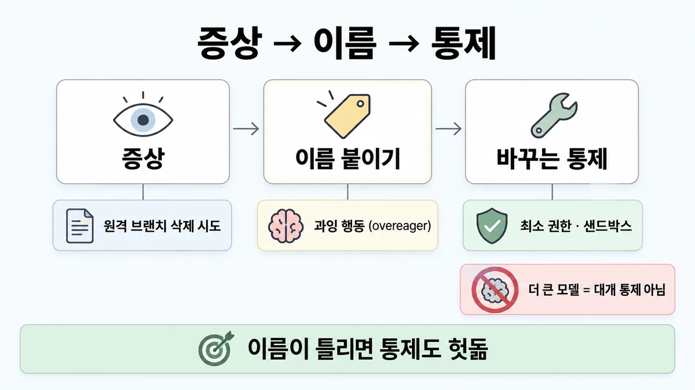
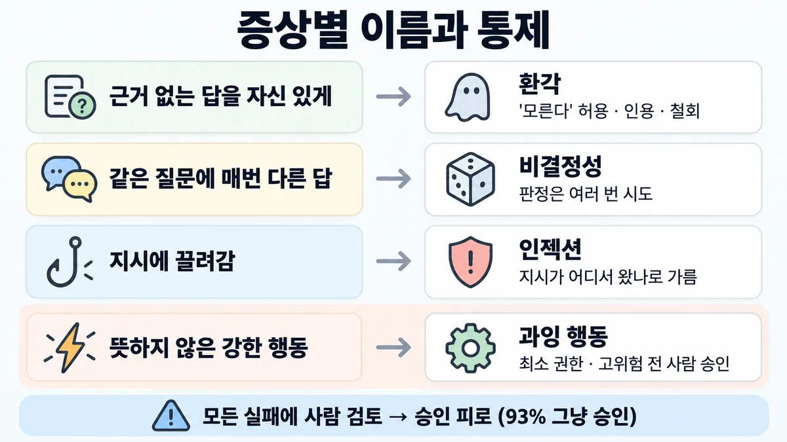
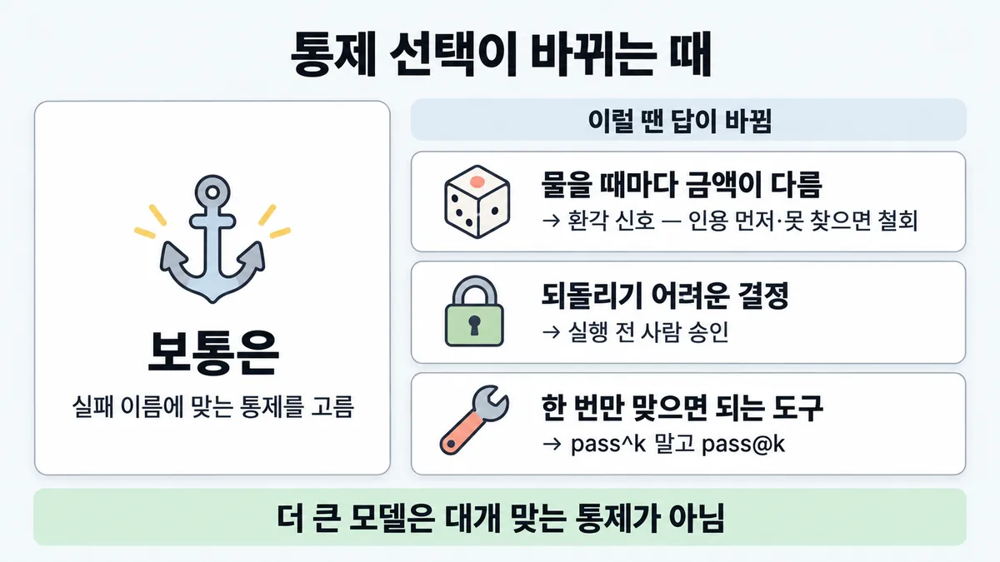

■ failure modes → 바꾸는 통제
표시가 없는 문장은 공식 문서에서 확인한 내용이에요. 다른 표시는 읽는 법
왜 배우나 — 시험이 요구하는 것
시험 목표 5.2 위험·한계·실패 유형 · D5 규정·안전 14%Identify risks, limitations, and failure modes of LLM systems
이 개념으로 푸는 판단 (할 수 있어야 하는 것)
- 5.2① 증상만 보고 실패에 이름을 붙일 수 있나? — 실패 유형 → 그 실패를 실제로 바꾸는 통제
- 5.3① 승인 요청이 하루 수백 개 — 전부 사람이 누르게 할까? — 사람 승인 게이트 위치 (빈도가 아니라 결과의 크기·되돌릴 수 있나)
- 4.4① 문서 갱신 뒤 자신 있게 틀린다 — 모델·지연은 그대로 — 어느 계층부터 조사하나 (첫 질문 = 증상 직전에 무엇이 바뀌었나)
- 5.1① 같은 사용자가 계속 탈옥을 시도한다 — 직접 인젝션(사용자가 공격자) 대응 고르기
- 5.1② 사용자가 넘긴 이메일 속에 "이 주소로 전부 보내라" 가 숨어 있다 — 간접 인젝션(사용자는 믿지만 가져온 콘텐츠가 적) 대응
한눈에
증상을 보고 실패에 이름을 붙인다. 그리고 그 이름에 맞는 통제(control)를 고른다. 이름이 틀리면 통제도 헛돈다 업계 일반 공식 문서에 failure modes 점검표 자체는 없음
"더 큰 모델"·"모든 것에 사람 검토" 는 대개 이름에 맞는 통제가 아니다 (추론 — 샘플 1 D 해설의 확장 · ③)
비유 장애 분류별 런북과 같다. 디스크 풀에 재시작을 하거나 OOM 에 네트워크 점검을 하면 안 고쳐진다


ELI5
아픈 곳마다 약이 달라요. 배가 아픈데 연고를 바르면 안 나아요.
- 먼저 "어디가 어떻게 아픈지" 이름을 붙여요.
- 이름이 맞아야 맞는 약을 고를 수 있어요.
- "더 비싼 약"이 늘 답은 아니에요.
- "의사한테 다 물어보기"도 너무 자주 하면 의사가 대충 봐요.
개념 설명
원리
이름과 통제(control)의 짝 (공식 문서에서 확인한 것만)
- 환각 : 근거 없이 매끄럽게 틀린다. 통제는 아래와 같다.
- "모른다" 를 허용한다
- 긴 문서(20k 토큰 초과)는 원문 인용부터 뽑게 한다
- 주장마다 인용하고, 못 찾으면 철회한다
- 준 문서만 쓰게 한다
- 여러 번 돌려 비교한다(Best-of-N)
- 비결정성 : run 마다 출력이 다르다. 통제는 판정을 여러 번(trials) 하는 것이다. 고객 대면이면 매번 성공해야 하니 pass^k 를 쓴다 (■ 성공 기준). 줄이려면 형식 명시 · 예시 · 검색(retrieval)으로 고정된 정보에 근거하게 한다.
- 직접 인젝션·탈옥 / 간접 인젝션 : 위협 모델이 다르다. 자세한 것은 ◆ 직접 인젝션 vs 간접 인젝션 에 있다.
- 과잉 행동(overeager) : 사용자가 뜻하지 않은 주도다(원격 브랜치 삭제 · 토큰 업로드 · 운영(production) DB 마이그레이션, Anthropic 사내 사고 기록 예). 통제는 아래와 같다.
- 최소 권한(least privilege)
- 샌드박스
- 고위험(high-stakes) 결정 전 사람 승인(human approval)
- 실행 직전 검사
- 오정렬 : 목표는 맞지만 맥락이 없어 과하게 한다("파일 정리" 를 시키면 중복을 삭제하고 폴더를 재구성한다). 통제는 투명성(transparency, 계획을 보이기)과 사람 통제다.
- 학습 컷오프 : 모델마다 reliable-knowledge·training-data cutoff 가 있다. 통제는 최신 사실을 검색해서 넣는 것이다(업계 일반).
- 거절 : HTTP 200 과 빈 content 가 온다. 자세한 것은 ■ stop_reason 으로 분기 에 있다.
사람 검토의 한계
- 수동 확인이 많으면 승인 피로가 생긴다. 사용자는 수동 확인의 93% 를 승인한다 (Claude Code auto mode 글).
- 사람을 조언 자리에만 두는 것만으로는 충분한 가드레일이 아니다. 이것이 자동화 편향(automation bias)이다 (Anthropic 차별 평가 논문).
- 그래서 "모든 실패에 사람 검토" 는 이름을 안 붙이고 뭉뚱그린 처방이다.
규칙과 판단


갈림길
① 증상으로 이름 붙이기 [5.2①]
환각
"모른다" 를 허용한다. 인용을 먼저 뽑게 한다. 못 찾으면 철회한다. 준 문서만 쓰게 한다
비결정성
run 마다 출력이 다르다. 그래서 판정은 여러 번 시도해서 한다
직접 인젝션·탈옥
자세한 것은 ◆ 직접 인젝션 vs 간접 인젝션 에 있다
간접 인젝션
자세한 것은 ◆ 직접 인젝션 vs 간접 인젝션 · ■ 프롬프트 인젝션 피해 경로 끊기 에 있다
과잉 행동 (overeager)
최소 권한(least privilege)·샌드박스를 쓴다. 고위험(high-stakes) 결정 전에는 사람 승인(human approval)을 받는다. 실행 직전 검사는 ◆ 안내(프롬프트) vs 강제(구성·코드) 에 있다
학습 컷오프
처방은 검색(web search · retrieval)해서 넣는 것이다 업계 일반. 모델마다 cutoff 가 있다
거절
자세한 것은 ■ stop_reason 으로 분기 에 있다
③ 통제 보기 가르기 [5.2①] [5.3①]
대개 통제가 아니다
환각(hallucination)·비결정성 처방 목록에도 없다 (추론). 모델 크기는 권한 범위와 무관하다
승인 피로
사용자는 수동 확인의 93% 를 그냥 승인한다
다음 물음 — 무엇이 이상한가?
나머지 규칙
-
오정렬 : 목표가 맞아도 맥락이 없어 과하게 행동한다. 예를 들어 "파일 정리" 를 시키면 중복이라 본 것을 삭제하고 폴더를 재구성한다. 통제는 투명성(transparency, 계획 보이기)과 사람 통제다. 자세한 것은 5.5③ 에 있다 [5.2①]
규칙 원문 ①③ (갈림길로 그린 규칙)
-
증상을 보고 이름을 붙이고, 이름에 맞는 통제를 고른다 [5.2①]
증상 이름 바꾸는 통제 없는 규정을 자신 있게 인용 환각 "모른다" 허용 · 긴 문서(20k 토큰 초과)는 원문 인용 먼저 · 주장마다 인용, 못 찾으면 철회 · 준 문서만 쓰게 같은 질문에 날마다 다른 금액 비결정성 run 마다 출력이 다르다. 그래서 판정은 여러 번 시도한다(trials). 고객 대면이면 pass^k 를 쓴다(■ 성공 기준). 여러 번 돌려 어긋나면 환각 신호일 수도 있다(Best-of-N). 줄이려면 형식 명시·예시·검색으로 고정된 정보에 근거하게 한다 역할극·인코딩으로 가드레일 우회 직접 인젝션·탈옥 자세한 것은 ◆ 직접 인젝션 vs 간접 인젝션 에 있다 메일·문서 속 지시대로 외부 발송 간접 인젝션 자세한 것은 ◆ 직접 인젝션 vs 간접 인젝션 · ■ 프롬프트 인젝션 피해 경로 끊기 에 있다 원격 브랜치 삭제 · 토큰 업로드 · 운영 DB 마이그레이션 시도 과잉 행동 (overeager, 사용자가 뜻하지 않은 주도) 최소 권한·샌드박스 · 고위험 결정 전 사람 승인 · 실행 직전 검사(◆ 안내(프롬프트) vs 강제(구성·코드)) · 수신자 allowlist 업계 일반 최신 사실을 모른다 학습 컷오프 모델마다 reliable-knowledge·training-data cutoff 가 있다 (2026-09-28 조회) · 처방은 검색해서 넣는 것이다 업계 일반 HTTP 200 인데 답이 비어 있다 거절 자세한 것은 ■ stop_reason 으로 분기 에 있다 환각 줄에 덧붙인다. 위 처방(인용·철회·준 문서만 쓰게)은 모델이 스스로 하는 **줄이기** 다. 에이전트는 매 걸음 환경에서 "ground truth"(도구 결과·코드 실행)를 받아 진행을 판단한다 (building-effective-agents)
틀린 것이 하나도 없어야 하면 모델 자기 확인·재검색이 아니라 모델 밖 원천(DB·원장·API 조회)과 전수 대조한다 (추론)
증상 이름 바꾸는 통제 사람이 습관처럼 승인한다 승인 피로 (approval fatigue) · 자동화 편향(automation bias) 아래 ③ 에 있다 -
사람 검토는 만능이 아니다. 수동 확인이 많으면 승인 피로가 생긴다. 사용자는 수동 확인의 93% 를 그냥 승인한다. 사람을 조언 자리에만 두는 것만으로는 충분한 가드레일이 아니다(자동화 편향). 자세한 것은 5.3① 에 있다 [5.2①] [5.3①]
더 깊이 : 판단 규칙 · 상황 변수 (설명)
판단 규칙
| 조건 | 답 | 등급 | 근거 |
|---|---|---|---|
| 없는 사실을 자신 있게 말한다 | 환각(hallucination)이다. "모른다" 를 허용하고, 인용 후 못 찾으면 철회하고, 준 문서만 쓰게 한다 | reduce-hallucinations | |
| 긴 문서(20k 토큰 초과)를 근거로 답한다 | 원문 인용을 먼저 뽑게 한다 | reduce-hallucinations | |
| 같은 입력에 run 마다 결과가 다르다 | 판정은 여러 번 시도해서 한다 | demystifying-evals | |
| 고객 대면이고 매번 믿을 만해야 한다 | pass^k | demystifying-evals | |
| 에이전트가 의도하지 않은 영향이 큰 행동을 한다 | 최소 권한 · 샌드박스 · 고위험 전 사람 승인 | mitigate-jailbreaks · safe-trustworthy-agents · claude-code-auto-mode | |
| 에이전트가 왜 그렇게 했는지 안 보인다 | 계획·추론(reasoning)을 보이게 한다 (투명성) | safe-trustworthy-agents | |
| 사람 확인 창이 너무 많다 | 승인 피로다. 확인을 줄이고 구조 통제로 막는다 | (피로) · 추론 (처방) | claude-code-auto-mode |
상황 변수
| 변수 | 값 | 답 쪽 | 등급 | 근거 |
|---|---|---|---|---|
| 틀린 모양 | 매번 같은 방향으로 틀린다 (없는 조항 인용) | 환각 · 근거 문제 | 판단 규칙 1 | |
| 틀린 모양 | 같은 입력에 매번 다르다 | 비결정성이다 (불일치가 환각 신호일 수도 있다) | reduce-hallucinations · demystifying-evals | |
| 틀린 모양 | 문서 갱신 뒤 자신 있게 틀린다. 모델·지연(latency)은 그대로다 | 검색·indexing(색인)을 먼저 본다 (4.4① 참고) | 가이드 샘플 3 | |
| 지시의 출처 | 사용자 | 직접 인젝션 | mitigate-jailbreaks | |
| 지시의 출처 | 가져온 콘텐츠 | 간접 인젝션 | mitigate-jailbreaks | |
| 행동의 무게 | 되돌리기 어렵다 (구독 해지 · 삭제) | 사람 승인 | safe-trustworthy-agents | |
| 행동의 무게 | 일상적이고 되돌릴 수 있다 | 사람 확인을 줄인다 (승인 피로) | 추론 | claude-code-auto-mode |
| 질문이 요구하는 것 | 최신 사실 | 학습 컷오프다. 검색해서 넣는다 | 업계 일반 | models overview(컷오프 존재만) |
연습 문제
개발자가 사내 코딩 Agent 에게 "테스트 좀 정리해 줘" 라고 했더니 Agent 가 원격 브랜치를 지우고 운영(production) DB 마이그레이션까지 시도뜻 밖 행동했다. 메일·문서 속에 숨은 지시는 없었다. 팀장은 "더 큰 모델로 바꾸면 안 그럴 것" 이라고 한다. 이 실패의 이름과 맞는 통제는?
시험 대비
함정
- "더 큰 모델이 더 안전하고 덜 뚫린다" 는 함정이다. 환각·비결정성 처방 목록에도 없다 (추론). 모델 크기는 권한 범위와 무관하다 (샘플 1 D)
- 모든 실패에 일괄로 "사람 검토" 를 거는 것은 함정이다. 승인 피로가 생긴다
- 같은 질문에 다른 답을 "모델 버그" 로 보는 것은 함정이다. run 마다 출력이 다르다. 판정은 여러 번 돌려서 한다
- "한 번 돌려 통과하면 된다" 는 함정이다. 비결정성이라 여러 번 시도한다
- 환각인데 "인젝션 필터" 를, 인젝션인데 "모른다 허용" 을 고르는 것은 함정이다. 이름이 틀리면 통제도 헛돈다 업계 일반
- 거절(빈 답)을 환각·장애로 보는 것은 함정이다. HTTP 200 과
refusal이 온다. 자세한 것은 ■ stop_reason 으로 분기 에 있다
신호
"These attacks fall into two categories with different threat models:"
"Allow Claude to say \"I don't know\""
"If it can't find a quote, it must retract the claim."
"Because model outputs vary between runs, we run multiple trials to produce more consistent results."
"Inconsistencies across outputs could indicate hallucinations."
"Each of these was the result of the model being overeager, taking initiative in a way the user didn't intend."
"Over time that leads to approval fatigue, where people stop paying close attention to what they're approving."
"placing humans in an advisory in-the-loop capacity is not by itself a sufficient guardrail."


더 깊이 : 뒤집히는 때 · 오답 재료 (설명)
뒤집히는 때
1. 비결정성인데 사실은 환각일 때
- 조건 : 같은 환불 질문을 5번 물었더니 3가지 금액이 나왔다.
- 판단 : 겉은 비결정성이다. 하지만 공식은 "여러 번 돌려 어긋나면 환각 신호일 수 있다" 고 한다. 그래서 금액이 문서에 있는지부터 본다(인용 후 철회). 판정은 여러 번 돌려서 한다.
- 등급 : (두 문장 모두 공식)
- 근거 : reduce-hallucinations · demystifying-evals
2. 사람 검토가 정답일 때
- 조건 : 에이전트가 월 구독 40개 중 12개를 해지하려 한다.
- 판단 : "모든 실패에 사람 검토" 는 오답이다. 하지만 고위험이고 되돌리기 어려운 결정 전의 사람 승인은 공식 원칙이다. 그래서 이 경우는 사람 승인 쪽이다.
- 근거 : safe-trustworthy-agents(구독 해지 예시 그대로)
3. pass@k 가 맞을 때
- 조건 : 사내 개발자용 도구다. 여러 번 시도해 한 번만 맞으면 된다.
- 판단 : 비결정성 판정을 pass^k 로 하면 과하게 엄격하다. 한 번 성공이 중요한 도구면 pass@k 를 쓴다.
- 근거 : demystifying-evals
오답 재료
| 오답 | 왜 끌리나 | 왜 틀리나 | 등급 | 근거 |
|---|---|---|---|---|
| "더 큰 모델이 더 안전하고 덜 뚫린다" | 큰 모델이 더 똑똑하다 | 모델 크기는 권한 범위와 무관하다. 환각·비결정성 처방 목록에도 없다 | (샘플 1) · 추론 (확장) | 가이드 샘플 1 해설 · reduce-hallucinations en 전문 |
| 모든 실패에 일괄 "사람 검토" | 가장 안전해 보인다 | 승인 피로가 생긴다. 사용자는 수동 확인의 93% 를 승인한다. 조언 자리의 사람만으로는 부족하다 | claude-code-auto-mode · evaluating-discrimination-paper | |
| 한 번 돌려 통과면 합격 | 빠르다 | run 마다 출력이 다르다. 여러 번 돌린다 | demystifying-evals | |
| 환각에 인젝션 필터 | "이상한 답 = 공격" 이라고 본다 | 지시에 끌려간 것이 아니라 근거가 없는 것이다. 인용과 철회로 고친다 | 업계 일반 | — |
| 빈 답(HTTP 200)을 장애로 보고 재시작 | 답이 없으니 고장으로 보인다 | 거절이다. stop_ 을 확인하고 다른 모델로 보낸다 | ■ stop_reason 으로 분기 | |
| "원인 불문 재시작" 식 한 처방 | 운영 습관이다 | 이름이 틀리면 통제도 헛돈다 | 업계 일반 | — |
참고
더 깊이 : 출처 · 상태 · 미해결 (참고)
출처
- 가이드 목표 5.2 공식 시험 가이드 v1.0
- 샘플 1 공식 시험 가이드 v1.0
- reduce-hallucinations
- demystifying-evals
- increase-consistency
- mitigate-jailbreaks
- claude-code-auto-mode
- safe-trustworthy-agents
- evaluating-discrimination-paper
- models overview
상태
- 업계 일반 4줄
- 추론 2줄
미해결
- 목록 5.2① 의 "자동화 편향(5.3 ①)" 은 공식 표현이 둘로 갈린다. Claude Code auto mode 글은 "approval fatigue", 차별 평가 논문은 "automation bias" 라고 쓴다. 둘 다 적었다.
- failure modes(실패 유형) 점검표 자체(이름 7개 묶음)는 공식 문서에 없다. 목록 5.2① 의 영상 요령이다. 카드 표에는 공식 문장이 있는 통제만 ✓ 로 표시했다.
- 학습 컷오프의 "검색·인용으로 보완" 은 받은 원문에서 직접 문장을 못 찾았다. models overview은 컷오프가 있다는 것만 말한다. 값 표는 defuddle 이 못 가져왔다. 그래서 업계 일반이다.
- 목록 5.2① 의 '위험 이름 → 영향 경계 → 결과를 바꾸는 통제' 풀이 순서는 강의 요령이다. 카드에 쓰지 않았다.